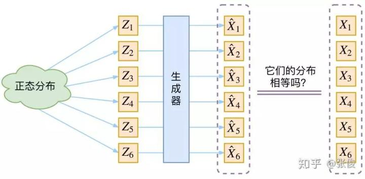
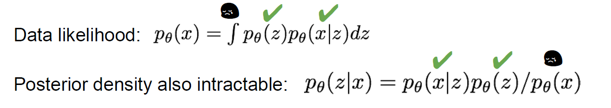
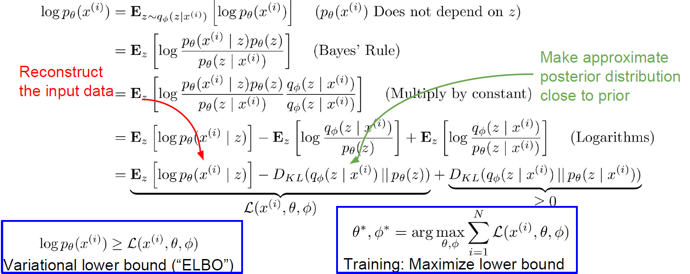
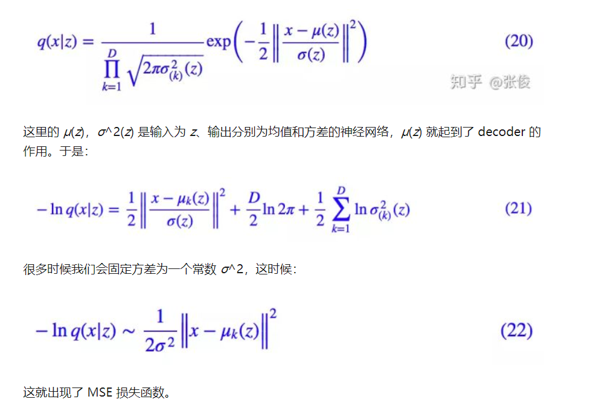

VAE & GANS
AutoEncoder
自动编码器（AE）是VAE的基础，在这里不多赘述，多用做一种降维的方式。由高维输入x经过一个神经网络Encoder得到一个低维隐向量z，再由隐向量z通过另一个神经网络Decoder还原为高位向量x。
VAE是在AE中引入了随机性，从而使得VAE在得以拥有高还原效果的同时得到生成新样本的能力。
VAE
有数据集{xi}i=1…N，想要得到x的真实分布p(x)
我们尝试用隐变量，其中隐变量满足一个普通的高斯分布（先验分布设成高斯很正常，否则为什么要 用隐变量= =）。然后希望学习一个分布之间的变换，使得我们可以使用一个普通的先验分布p(z)(e.g. 正态分布)变换得到分布P’(x)使得其与真是分布P(x)尽可能相同。生成器我们可以使用神经网络进行拟合。
问题是我们只有两个分布的采样，没有他们的表达式就没有办法使用KL散度来衡量两个分布之间的差异

Problem：不可积分

和多数生成模型相同，VAE同样对P(x)进行建模。一种方法如上，这种方法对于大数据集很难使用，因为P(X)不可积分，我们很难对每一个可能的z求积分，进而导致我们没有办法对后验概率建模，which is our encoder network。
所以我们使用一个Encoder network的variational inference：用q(Φ, z|x)对真实的P(θ, z|x)后验概率进行拟合估计之后使用贝叶斯公式可以得到P(X)
Random Factor
为了生成新的模型，我们在模型中加入随机因素，Encoder Network只输出z符合的正态分布的均值和方差（假设先验分布为正态分布），这样每次我们对这个分布进行采样解码就可以生成不同但是相似的样本。
公式解析
第一步公式变化见下面的图片（选自CS231n 生成模型PPT）

化简为一个Variational lower bound（代表我们一个拟合的下界）和一个KL散度（衡量两个后验分布之间的差异）。其中ELBO的第一部分代表对于隐向量的高维重建，这部分和AE类似，优化方法是比较重构结果和原始样本点的L2损失；
由于每个p(x | z)都是高斯分布，实际上我们的VAE也是一种（infinite的）高斯混合模型。模型主要的复杂能力来自于这个积分.
$$
p_\theta(x) =\int p_\theta(x | z)p_\theta(z) dz
$$decoder神经网络的输出实际上就是L的第一项，即就是一个期望值。这是因为对于decoder来说，我们只是为了其衡量效果，对于方差我们一方面希望它尽量小，另一方面也并不希望它发生变动，所以这里我们假设p(x|z,θ)服从正态分布（是什么分布不重要，只要满足x(i)的对应概率高就好了）且其方差不变，这样我们的decoder network就只需要专心学习分布的均值就好了，最终通过公式推到就得到了和AE类似的MSE reconstruction loss。

重参数技巧（reparameteration trick），因为我们在网络中输出μ和σ后对z进行了sample，但是如果直接使用σ进行采样的话会导致我们梯度的方差也会很大（有一个方差因子σ），会导致我们的训练过程波动很大，从而影响训练效果。因此我们必须将采样过程单独分离出来，即将μ和σ作为两个参数，而仅需在N(0, 1)上采样即可。

第二部分则是一个KL散度，说明我们希望将每一个qφ(z|x) 尽可能地和正态分布相同，这也就是训练时的一个loss来源。这符合我们最后先从标准正态分布中sample z，再用z重构x。

Decoder Loss：右边第一项实际上是reconstruction的过程，要求重生成的图像和原图像相似，使用MSE loss可以，但是需要选定合适的超参数平衡两部分误差。
Encoder Loss：右边第二项又是一个KL散度，这部分的优化需要一个trick：reparameter，具体过程见外链，简单来说就是由于我们认为P(z)服从一个一个简单的先验分布——（单位）正态分布，这样我们就可以根据KL的公式去得到一个只跟q(z)相关的loss，代表两个分布之间的差值，且直接和mean和variance相关。

模型分析
VAE的强大之处：encoder结果实际上只是高斯分布的一个均值，但是它可以通过加入单位化方差来加入高斯噪声，从而使得一个fixed mean vector得以包含更多的信息，再通过一个（类AE）的decoder network将这个信息回复出来，同时还实现了随机性。
这里我们将目标的先验分布设置成标准的正态分布有两个原因：均值为0，这是重构的要求，若方差也为0那么就退化成了AE，所以方差不为0，就相当于人为的引入了噪声，一方面是保持结果随机性，另一方面是为了增强decoder的鲁棒性。
重构是希望没有噪声的，而KL loss将分布趋向于标准正态分布实际上是倾向于引入噪声的，这样实际上也是一个对抗的过程。
Paperweekly的观点：
它本质上就是在我们常规的自编码器的基础上，对 encoder 的结果（在VAE中对应着计算均值的网络）加上了“高斯噪声”，使得结果 decoder 能够对噪声有鲁棒性；而那个额外的 KL loss（目的是让均值为 0，方差为 1），事实上就是相当于对 encoder 的一个正则项，希望 encoder 出来的东西均有零均值。
那另外一个 encoder（对应着计算方差的网络）的作用呢？它是用来动态调节噪声的强度的。
直觉上来想，当 decoder 还没有训练好时（重构误差远大于 KL loss），就会适当降低噪声（KL loss 增加），使得拟合起来容易一些（重构误差开始下降）。
反之，如果 decoder 训练得还不错时（重构误差小于 KL loss），这时候噪声就会增加（KL loss 减少），使得拟合更加困难了（重构误差又开始增加），这时候 decoder 就要想办法提高它的生成能力了。
说白了，重构的过程是希望没噪声的，而 KL loss 则希望有高斯噪声的，两者是对立的。所以，VAE 跟 GAN 一样，内部其实是包含了一个对抗的过程，只不过它们两者是混合起来，共同进化的。